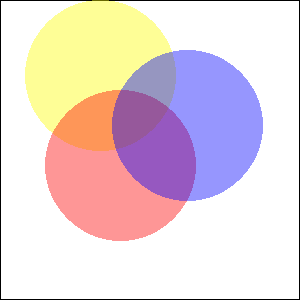

(PHP 4 >= 4.3.2, PHP 5, PHP 7, PHP 8)
imagecolorallocatealpha — 为图像分配颜色
imagecolorallocatealpha() 的行为和
imagecolorallocate() 相同，但多了一个额外的透明度参数
alpha。
image由图象创建函数(例如imagecreatetruecolor())返回的 GdImage 对象。
red红色成分的值。
green绿色成分的值。
blue蓝色成分的值。
alpha
介于 0 和 127 之间的值。0
表示完全不透明，而 127 表示完全透明。
red、green 和 blue
参数是 0 到 255 之间的整数或 0x00 到 0xFF 之间的十六进制数。
颜色标识符，如果分配失败，则为 false。
示例 #1 使用 imagecolorallocatealpha() 的示例
<?php
$size = 300;
$image=imagecreatetruecolor($size, $size);
// 白色背景加黑色边框
$back = imagecolorallocate($image, 255, 255, 255);
$border = imagecolorallocate($image, 0, 0, 0);
imagefilledrectangle($image, 0, 0, $size - 1, $size - 1, $back);
imagerectangle($image, 0, 0, $size - 1, $size - 1, $border);
$yellow_x = 100;
$yellow_y = 75;
$red_x = 120;
$red_y = 165;
$blue_x = 187;
$blue_y = 125;
$radius = 150;
// 用 alpha 值分配一些颜色
$yellow = imagecolorallocatealpha($image, 255, 255, 0, 75);
$red = imagecolorallocatealpha($image, 255, 0, 0, 75);
$blue = imagecolorallocatealpha($image, 0, 0, 255, 75);
// 绘制 3 个重叠的圆
imagefilledellipse($image, $yellow_x, $yellow_y, $radius, $radius, $yellow);
imagefilledellipse($image, $red_x, $red_y, $radius, $radius, $red);
imagefilledellipse($image, $blue_x, $blue_y, $radius, $radius, $blue);
// 不要忘记输出正确的 header！
header('Content-Type: image/png');
// 最后，输出结果
imagepng($image);
?>以上示例的输出类似于：

示例 #2 转换典型的 alpha 值以供 imagecolorallocatealpha() 使用
通常，alpha 值为 0 表示完全透明的像素，alpha 通道有 8 位。要转换此类
alpha 值以与 imagecolorallocatealpha() 兼容，只需进行一些简单的算术运算即可：
<?php
$alpha8 = 0; // 完全透明
var_dump(127 - ($alpha8 >> 1));
$alpha8 = 255; // 完全不透明
var_dump(127 - ($alpha8 >> 1));
?>以上示例会输出：
int(127) int(0)